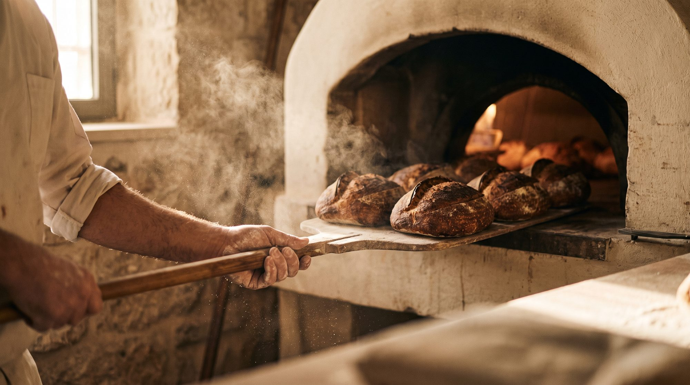
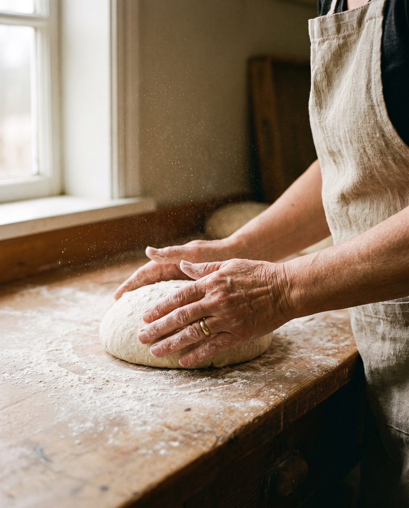
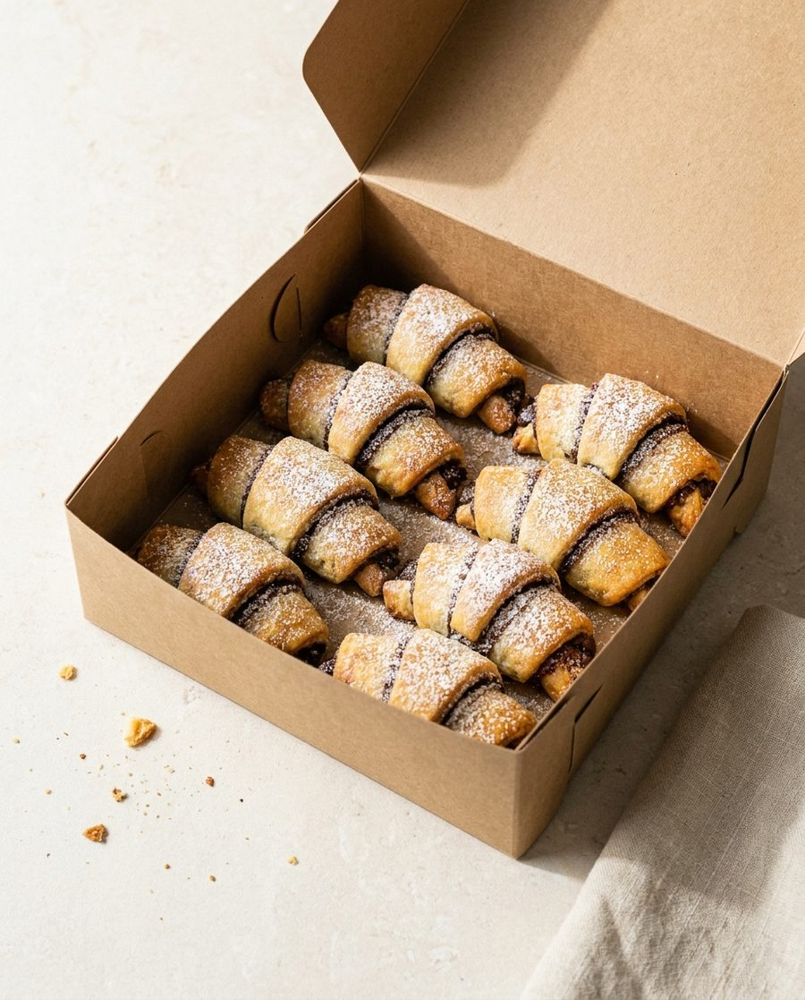
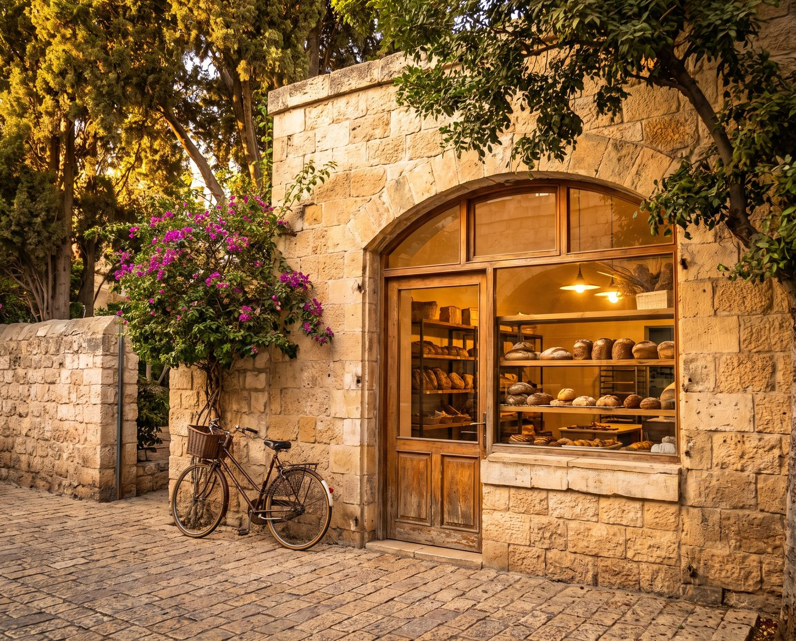
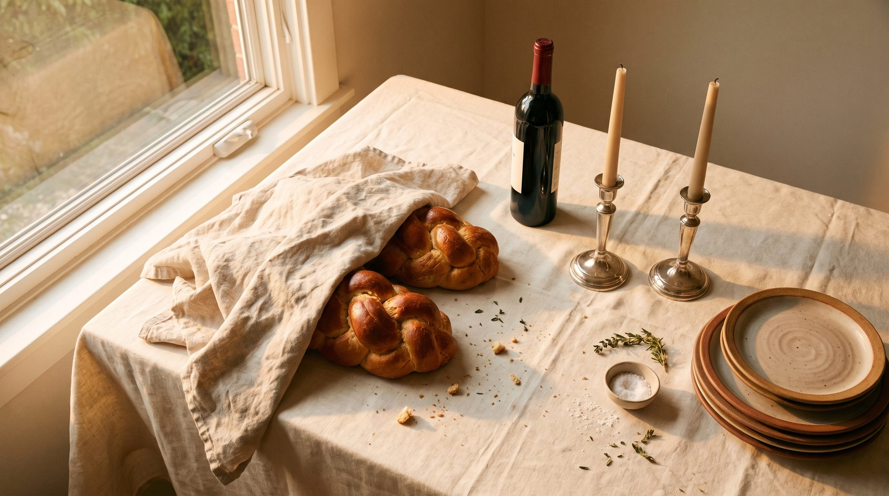

Six strands, a long cold prove, brushed twice.

Emek Refaim, Jerusalem
A small bakery on Emek Refaim since 1998. Everything on the shelf was mixed, proved and baked in the same room you are standing in.
Batya opened with one oven and a list of her mother's proportions. The list has not changed. The oven has, twice.


What is out today
Baked in one batch each morning. When a shelf is empty, that is the day.
Six strands, a long cold prove, brushed twice.

Laminated Thursday night, baked Friday morning.

Twelve, still warm if you come before nine.

One starter, fed since the year we opened.
A morning here
Flour, water, salt, the starter from the fridge. Nothing else goes in, which is why the list on the wall has never needed a second page.
Every loaf is shaped by hand at the same bench, by whoever is in. It is the slowest part of the morning and the part nobody has agreed to speed up.
One oven, one batch, steam for the first ten minutes. What comes out is what there is until tomorrow.
I stopped buying bread anywhere else in 2004.
Come in


Tell us what you want and when you are coming. We will have it wrapped and waiting with your name on it.